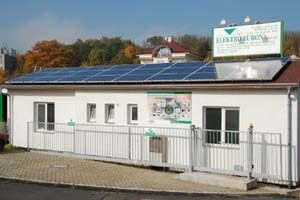

Fotovoltaika (FVE)
Kompletní dodávky fotovoltaických elektráren na klíč včetně stavebního řízení, připojení k distribuční soustavě a licence na výrobu.
Základní informace
Slunce je naším hlavním zdrojem obnovitelné energie. Přímá přeměna sluneční energie na energii elektrickou je v současné době jednou z nejekonomičtějších cest k vlastní výrobě energie a úspoře energie čerpané z rozvodné sítě.
Jedná se o čistý zdroj výroby elektrické energie, při kterém nevznikají látky zatěžující životní prostředí. Samotná realizace je považována za jednu z nejšetrnějších ke svému okolí.
Provoz fotovoltaické elektrárny
Fotovoltaická elektrárna je sestavena z navzájem spojených fotovoltaických modulů, kde dochází k přeměně slunečního záření na elektrickou energii. Počet modulů určuje výkon elektrárny. Moduly jsou umístěny na střechách nebo volných plochách pomocí konstrukčních prvků zajišťujících správnou orientaci a sklon modulu k úhlu dopadu slunečního záření. Dalším prvkem fotovoltaické elektrárny je měnič – střídač, zařízení které upravuje vyrobenou energii na parametry shodné s parametry v síti distribuční soustavy.
Technické údaje, realizace
Dodáváme fotovoltaické systémy jako kompletní dodávky na klíč s vyřešením všech nutných administrativních kroků spojených se stavebním řízením, vyřízením připojení výrobny k distribuční soustavě a vyřízením licence na výrobu. Dodáváme také jednotlivé komponenty, moduly, měniče, kabeláž, monitorovací zařízení. V naší nabídce je široký sortiment komponentů výrobců z EU i Asie. Našim zákazníkům poskytujeme technickou podporu po celou dobu provozu fotovoltaické elektrárny. V letech 2009 – 2012 jsme realizovali velké množství instalací od malých výroben umístěných na střechách rodinných domů až po velké solární parky na volných plochách. Můžeme se prokázat širokou paletou referenčních staveb.
Legislativa
V současné době je možné získat kladné stanovisko od provozovatele distribuční sítě v našem regionu jak pro mikrozdroje pro rodinné domy (do 10 kW), tak pro větší FVE instalované na střechách výrobních a administrativních objektů. Neváhejte nás kontaktovat a informovat se o možnostech dotačních programů pro Váš projekt FVE.


Projekt FVE na sídle firmy byl spolufinancován Evropskou unií (Evropský fond pro regionální rozvoj).